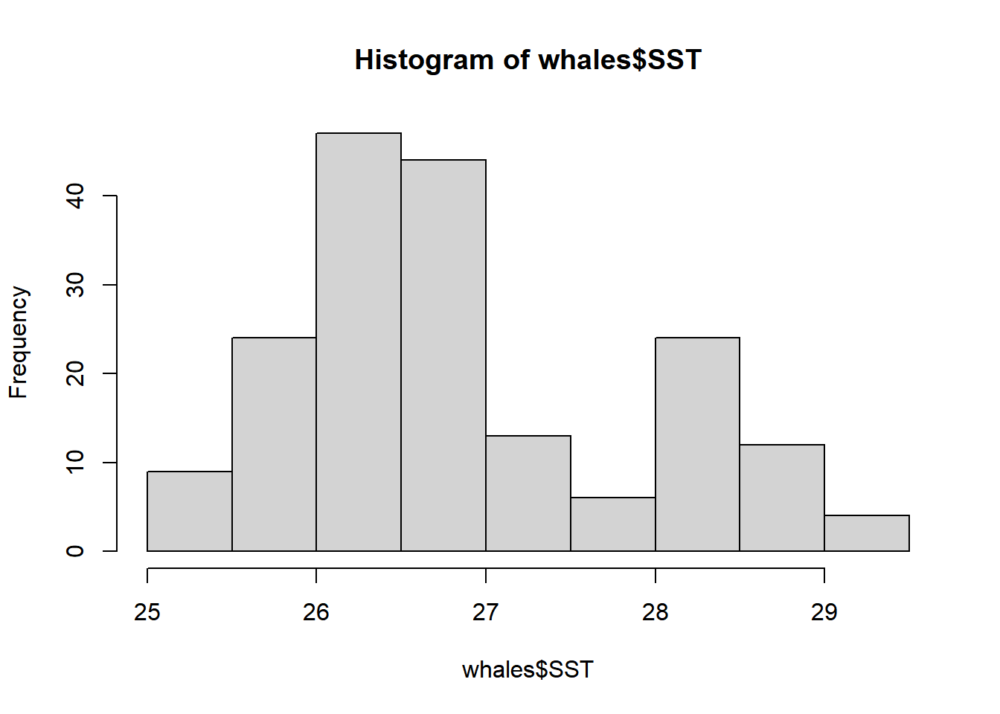

Reproducible-Science-demo2
Zhangyixue
This document was last updated on 周五 7月 08 2022 20:18:53
Last updated: 2022-07-08
Checks: 7 0
Knit directory: Tutorials/
This reproducible R Markdown analysis was created with workflowr (version 1.7.0). The Checks tab describes the reproducibility checks that were applied when the results were created. The Past versions tab lists the development history.
Great! Since the R Markdown file has been committed to the Git repository, you know the exact version of the code that produced these results.
Great job! The global environment was empty. Objects defined in the global environment can affect the analysis in your R Markdown file in unknown ways. For reproduciblity it’s best to always run the code in an empty environment.
The command set.seed(20220708) was run prior to running the code in the R Markdown file. Setting a seed ensures that any results that rely on randomness, e.g. subsampling or permutations, are reproducible.
Great job! Recording the operating system, R version, and package versions is critical for reproducibility.
Nice! There were no cached chunks for this analysis, so you can be confident that you successfully produced the results during this run.
Great job! Using relative paths to the files within your workflowr project makes it easier to run your code on other machines.
Great! You are using Git for version control. Tracking code development and connecting the code version to the results is critical for reproducibility.
The results in this page were generated with repository version 0cd1fa6. See the Past versions tab to see a history of the changes made to the R Markdown and HTML files.
Note that you need to be careful to ensure that all relevant files for the analysis have been committed to Git prior to generating the results (you can use wflow_publish or wflow_git_commit). workflowr only checks the R Markdown file, but you know if there are other scripts or data files that it depends on. Below is the status of the Git repository when the results were generated:
Ignored files:
Ignored: analysis/ReproScie-note_cache/
Note that any generated files, e.g. HTML, png, CSS, etc., are not included in this status report because it is ok for generated content to have uncommitted changes.
These are the previous versions of the repository in which changes were made to the R Markdown (analysis/ReproScie-demo2.Rmd) and HTML (docs/ReproScie-demo2.html) files. If you’ve configured a remote Git repository (see ?wflow_git_remote), click on the hyperlinks in the table below to view the files as they were in that past version.
| File | Version | Author | Date | Message |
|---|---|---|---|---|
| Rmd | 0cd1fa6 | zhanglantian2021 | 2022-07-08 | first |
1 Yaml
see the top # chunk
1.1 chunk-single
H-hide;S-show;N-don’t run;Y-run
1.1.1 HcodeSresult
DatasetID ID latitude longitude
Min. :328 Length:185 Min. :25.85 Min. :-77.45
1st Qu.:328 Class :character 1st Qu.:25.91 1st Qu.:-77.40
Median :328 Mode :character Median :25.95 Median :-77.35
Mean :328 Mean :26.04 Mean :-77.30
3rd Qu.:328 3rd Qu.:25.99 3rd Qu.:-77.28
Max. :328 Max. :26.65 Max. :-76.86
CommonName SpeciesName TSN Count
Length:185 Length:185 Min. :180403 Min. : 1.000
Class :character Class :character 1st Qu.:180426 1st Qu.: 1.000
Mode :character Mode :character Median :180492 Median : 3.000
Mean :200583 Mean : 4.822
3rd Qu.:180517 3rd Qu.: 5.000
Max. :552460 Max. :30.000
DateTime UploadDate ResearchOrganization Contact
Length:185 Length:185 Length:185 Length:185
Class :character Class :character Class :character Class :character
Mode :character Mode :character Mode :character Mode :character
Depth SST
Min. : 1.0 Min. :25.12
1st Qu.: 40.0 1st Qu.:26.40
Median : 274.0 Median :26.62
Mean : 247.8 Mean :26.90
3rd Qu.: 309.0 3rd Qu.:27.49
Max. :1024.0 Max. :29.48
NA's :8 NA's :2 
载入需要的程辑包：ggplot3Warning in library(package, lib.loc = lib.loc, character.only = TRUE,
logical.return = TRUE, : 不存在叫'ggplot3'这个名字的程辑包1.1.2 Hresult-SNcode
whales <- read.csv(file = 'E:/academic_resources/note-tutorial/data/bbmroData.csv')
summary(whales)
hist(whales$SST)
require(ggplot3)1.1.3 Hresult-HYcode
1.1.4 Sresult-HYcode
whales <- read.csv(file = 'E:/academic_resources/note-tutorial/data/bbmroData.csv')
summary(whales)
hist(whales$SST)
require(ggplot3)载入需要的程辑包：ggplot3Warning in library(package, lib.loc = lib.loc, character.only = TRUE,
logical.return = TRUE, : 不存在叫'ggplot3'这个名字的程辑包1.1.5 Hfigure
whales <- read.csv(file = 'E:/academic_resources/note-tutorial/data/bbmroData.csv')
summary(whales) DatasetID ID latitude longitude
Min. :328 Length:185 Min. :25.85 Min. :-77.45
1st Qu.:328 Class :character 1st Qu.:25.91 1st Qu.:-77.40
Median :328 Mode :character Median :25.95 Median :-77.35
Mean :328 Mean :26.04 Mean :-77.30
3rd Qu.:328 3rd Qu.:25.99 3rd Qu.:-77.28
Max. :328 Max. :26.65 Max. :-76.86
CommonName SpeciesName TSN Count
Length:185 Length:185 Min. :180403 Min. : 1.000
Class :character Class :character 1st Qu.:180426 1st Qu.: 1.000
Mode :character Mode :character Median :180492 Median : 3.000
Mean :200583 Mean : 4.822
3rd Qu.:180517 3rd Qu.: 5.000
Max. :552460 Max. :30.000
DateTime UploadDate ResearchOrganization Contact
Length:185 Length:185 Length:185 Length:185
Class :character Class :character Class :character Class :character
Mode :character Mode :character Mode :character Mode :character
Depth SST
Min. : 1.0 Min. :25.12
1st Qu.: 40.0 1st Qu.:26.40
Median : 274.0 Median :26.62
Mean : 247.8 Mean :26.90
3rd Qu.: 309.0 3rd Qu.:27.49
Max. :1024.0 Max. :29.48
NA's :8 NA's :2 hist(whales$SST)require(ggplot3)载入需要的程辑包：ggplot3Warning in library(package, lib.loc = lib.loc, character.only = TRUE,
logical.return = TRUE, : 不存在叫'ggplot3'这个名字的程辑包1.1.6 other-setup
whales <- read.csv(file = 'E:/academic_resources/note-tutorial/data/bbmroData.csv')
summary(whales) DatasetID ID latitude longitude
Min. :328 Length:185 Min. :25.85 Min. :-77.45
1st Qu.:328 Class :character 1st Qu.:25.91 1st Qu.:-77.40
Median :328 Mode :character Median :25.95 Median :-77.35
Mean :328 Mean :26.04 Mean :-77.30
3rd Qu.:328 3rd Qu.:25.99 3rd Qu.:-77.28
Max. :328 Max. :26.65 Max. :-76.86
CommonName SpeciesName TSN Count
Length:185 Length:185 Min. :180403 Min. : 1.000
Class :character Class :character 1st Qu.:180426 1st Qu.: 1.000
Mode :character Mode :character Median :180492 Median : 3.000
Mean :200583 Mean : 4.822
3rd Qu.:180517 3rd Qu.: 5.000
Max. :552460 Max. :30.000
DateTime UploadDate ResearchOrganization Contact
Length:185 Length:185 Length:185 Length:185
Class :character Class :character Class :character Class :character
Mode :character Mode :character Mode :character Mode :character
Depth SST
Min. : 1.0 Min. :25.12
1st Qu.: 40.0 1st Qu.:26.40
Median : 274.0 Median :26.62
Mean : 247.8 Mean :26.90
3rd Qu.: 309.0 3rd Qu.:27.49
Max. :1024.0 Max. :29.48
NA's :8 NA's :2 hist(whales$SST)require(ggplot3)1.2 chunk-global
knitr::opts_chunk$set(echo=TRUE, fig.align="center", message=FALSE, warning=FALSE,cache=TRUE)2 display
2.1 data-result
library(palmerpenguins)
library(tidyverse)
penguins %>%
slice(1:10) %>%
knitr::kable()| species | island | bill_length_mm | bill_depth_mm | flipper_length_mm | body_mass_g | sex | year |
|---|---|---|---|---|---|---|---|
| Adelie | Torgersen | 39.1 | 18.7 | 181 | 3750 | male | 2007 |
| Adelie | Torgersen | 39.5 | 17.4 | 186 | 3800 | female | 2007 |
| Adelie | Torgersen | 40.3 | 18.0 | 195 | 3250 | female | 2007 |
| Adelie | Torgersen | NA | NA | NA | NA | NA | 2007 |
| Adelie | Torgersen | 36.7 | 19.3 | 193 | 3450 | female | 2007 |
| Adelie | Torgersen | 39.3 | 20.6 | 190 | 3650 | male | 2007 |
| Adelie | Torgersen | 38.9 | 17.8 | 181 | 3625 | female | 2007 |
| Adelie | Torgersen | 39.2 | 19.6 | 195 | 4675 | male | 2007 |
| Adelie | Torgersen | 34.1 | 18.1 | 193 | 3475 | NA | 2007 |
| Adelie | Torgersen | 42.0 | 20.2 | 190 | 4250 | NA | 2007 |
There are 344 penguins in the dataset, and 3 different species. The data were collected in 3 islands of the Palmer archipelago in Antarctica.
2.2 sheet
see the last example
2.3 picture
- input:

- output:
pdf(file = 'E:/academic_resources/note-tutorial/output/firstHistogram.pdf')
hist(whales$SST)
dev.off()png
2 3 cite
3.1 bibliography&csl
turn to zotero to create bib and csl files ## citr-package
- when installed package ‘citr’,a botton of ‘addins’ show on Rstudio
- or just run the code
library("citr")
md_cite("Cuny 2015", bib_file = "E:/academic_resources/note-tutorial/data/format/MyLibrary.bib") Cuny et al. (2015). Woody Biomass Production Lags Stem-Girth Increase by over One Month in Coniferous Forests. Nature Plants. [1] "[@cunyWoodyBiomassProduction2015]"copy the results:"[@cunyWoodyBiomassProduction2015]
open zotero and use the plug in“citation picker for zotero”, use’shift+alt+z’ and choose such as:@diogoverissimoIntroducingConservationMarketing2016; @kollmussMindGapWhy2002
3.2 rticles-package
- when installed package “rticles”, in the rstudio: File -> New File -> R Markdown-> From template
- choose what you need: https://github.com/rstudio/rticles
- run code to get the template
getwd()
setwd("E:/academic_resources/note-tutorial/data/format")
getwd()
rmarkdown::draft(
"pnas-template.Rmd", template = "pnas", package = "rticles"
)
sessionInfo()R version 4.2.0 (2022-04-22 ucrt)
Platform: x86_64-w64-mingw32/x64 (64-bit)
Running under: Windows 10 x64 (build 19043)
Matrix products: default
locale:
[1] LC_COLLATE=Chinese (Simplified)_China.utf8
[2] LC_CTYPE=Chinese (Simplified)_China.utf8
[3] LC_MONETARY=Chinese (Simplified)_China.utf8
[4] LC_NUMERIC=C
[5] LC_TIME=Chinese (Simplified)_China.utf8
attached base packages:
[1] stats graphics grDevices utils datasets methods base
other attached packages:
[1] citr_0.3.2 forcats_0.5.1 stringr_1.4.0
[4] dplyr_1.0.8 purrr_0.3.4 readr_2.1.2
[7] tidyr_1.2.0 tibble_3.1.7 ggplot2_3.3.5
[10] tidyverse_1.3.1 palmerpenguins_0.1.0 workflowr_1.7.0
loaded via a namespace (and not attached):
[1] httr_1.4.3 sass_0.4.1 jsonlite_1.8.0 modelr_0.1.8
[5] bslib_0.3.1 shiny_1.7.1 assertthat_0.2.1 getPass_0.2-2
[9] highr_0.9 cellranger_1.1.0 yaml_2.3.5 pillar_1.7.0
[13] backports_1.4.1 glue_1.6.2 digest_0.6.29 promises_1.2.0.1
[17] rvest_1.0.2 RefManageR_1.3.0 colorspace_2.0-3 htmltools_0.5.2
[21] httpuv_1.6.5 plyr_1.8.7 pkgconfig_2.0.3 bibtex_0.4.2.3
[25] broom_0.8.0 haven_2.5.0 xtable_1.8-4 scales_1.2.0
[29] processx_3.5.3 whisker_0.4 later_1.3.0 tzdb_0.3.0
[33] git2r_0.30.1 generics_0.1.2 ellipsis_0.3.2 withr_2.5.0
[37] cli_3.2.0 magrittr_2.0.3 crayon_1.5.1 readxl_1.4.0
[41] mime_0.12 evaluate_0.15 ps_1.6.0 fs_1.5.2
[45] fansi_1.0.3 xml2_1.3.3 tools_4.2.0 hms_1.1.1
[49] lifecycle_1.0.1 munsell_0.5.0 reprex_2.0.1 callr_3.7.0
[53] compiler_4.2.0 jquerylib_0.1.4 rlang_1.0.2 grid_4.2.0
[57] rstudioapi_0.13 miniUI_0.1.1.1 rmarkdown_2.14 gtable_0.3.0
[61] DBI_1.1.2 curl_4.3.2 R6_2.5.1 lubridate_1.8.0
[65] knitr_1.39 fastmap_1.1.0 utf8_1.2.2 rprojroot_2.0.3
[69] stringi_1.7.6 Rcpp_1.0.8.3 vctrs_0.4.1 dbplyr_2.1.1
[73] tidyselect_1.1.2 xfun_0.30